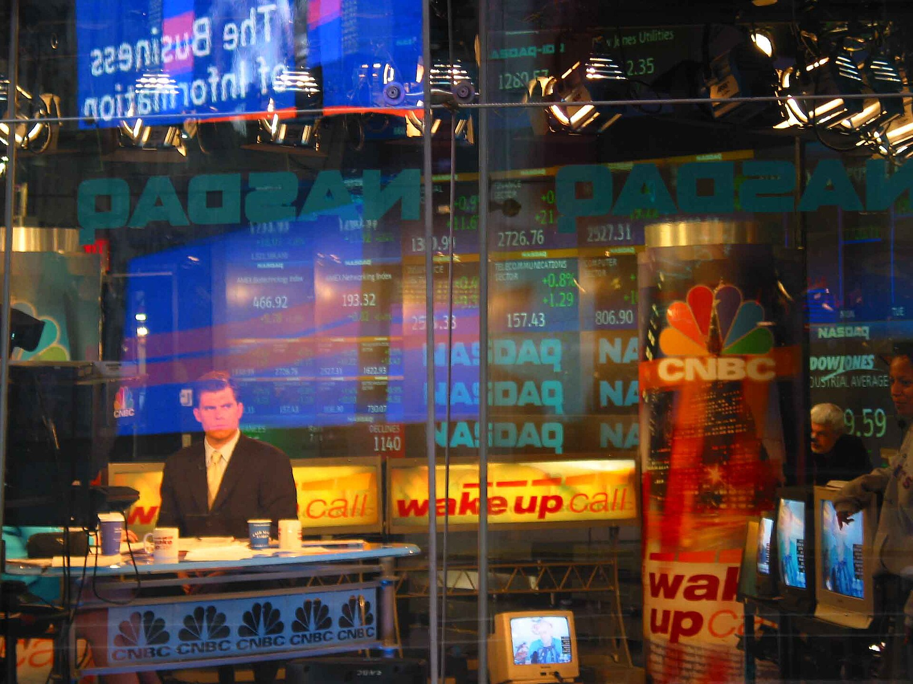
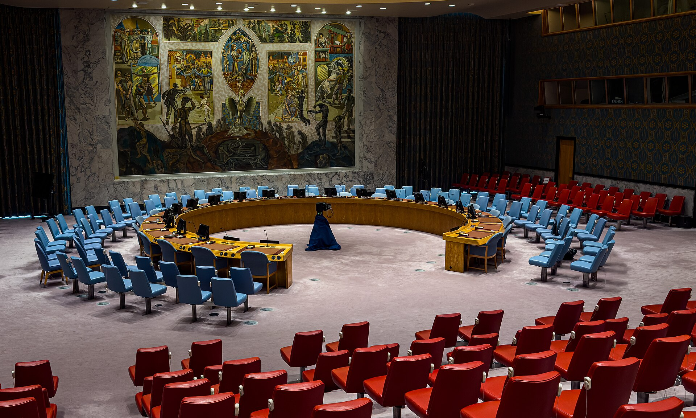

Vol. I · No. 115 · Friday, September 18, 2026 · 19 items · ~18 min read
OpenAI shipped a model built for the largest law firms, and a nonprofit supplied the case law it reads.
AI · Corporate · San Francisco
OpenAI puts a model inside the Am Law 200, and a nonprofit supplied the case law
The Pioneer Building in San Francisco's Mission District, which houses OpenAI's offices. — Wikimedia Commons / CC BY-SA 4.0
OpenAI released Astra for Law on Thursday, a configuration of GPT-6 Astra wired to a dedicated legal search index covering more than 230 million URLs of United States case law, statutes, regulations, court rules and administrative decisions. , who runs the legal effort, said it is not a new model but a configuration of one. Measured against 200 United States legal research questions drawn from the private validation set of 's Legal Research Bench, the configuration passed the overall correctness check on 54 percent of questions at highest reasoning effort, against 38.7 percent for GPT-6 Astra with ordinary web search. That is 15.3 percentage points, a 40 percent relative improvement. On case-law questions it found 24 percent more reference cases and retrieved up to 54 percent more relevant passages from the correct opinions at equal reasoning effort. Its answers run roughly twice as long as the web-only baseline.
The substrate under the index is CourtListener, maintained by the , reported to cover more than 99.9 percent of published United States precedential case law. Alongside it OpenAI opened a Trusted Access Program aimed at firms, carrying on the API and excluding ChatGPT Enterprise usage from human review; Boehmig conceded the one-sentence summary sits on top of an access agreement that "runs some 30 pages." Sullivan & Cromwell has built an agreement analyzer on its own negotiating playbooks, Ropes & Gray an M&A diligence system, Cooley a tool called GO Public for drafting IPO filings and identifying risk, and Latham & Watkins is working on information permissions, ethical walls and firm oversight. Wachtell Lipton is also named. The release shipped with 26 partner plugins, nine community plugins, 47 custom skills built by legal users rather than by OpenAI, and general availability of ChatGPT for Word.
The competitive field is now a year old and fully staffed. Microsoft shipped a Legal Agent in Word in April, Anthropic released Claude for Legal in May with more than twenty connectors and twelve practice-area plugins, Google put out Gemini Enterprise for Legal in August, and Thomson Reuters released Thomson 1.0 the same month, built on open-source models and trained on its own legal content. Harvey and Legora, the two best-funded legal vendors, will build on Astra for Law through the API rather than against it. Asked about access to justice, Boehmig called it a paramount concern personally and for OpenAI and said there was nothing to announce.
Markets · Washington
The first auction after the Warsh hike tails, at the highest ten-year real yield since 2008
Treasury reopened $19bn of ten-year TIPS on Thursday at a real yield of 2.653 percent, the highest a ten-year TIPS has cleared since an October 2008 auction stopped at 2.85. The level was 2.634, so the auction by 1.9 basis points. Bid-to-cover came in at 2.24, the weakest for the term in a year. The coupon was fixed at 2.375 at the July 23 originating auction, so the higher clearing yield produced an unadjusted price of 97.612784 and an of 0.99985 at the September 30 settlement. The clearing yield is 22 basis points above July and 75 above the March reopening.
The cash market went the other way. One day after the Federal Open Market Committee raised the target range to 3.75 to 4.00 percent on a 12-0 vote, the two-year closed at 4.67, the ten-year at 4.93 and the thirty-year at 5.282, each down more than five basis points, leaving 2s10s near plus 26 and 10s30s near plus 35. The ten-year sat at 2.30 against realised ten-year inflation of 3.4 percent through August. CME futures moved to 49 percent odds of another hike on October 28, from 40 percent Wednesday morning, and 87 percent odds of at least one more this year. Sixteen of eighteen policymakers project at least one further increase in 2026 and four project two; the median 2026 and 2027 rate rose to 4.1 percent from 3.8 and 3.6 in June. Brent settled at $104.82, down $1.01.
The World · Washington · cross-spectrum LLCLRR
Trump will sign the Graham sanctions act, and take 100 percent tariff authority over China and India
A White House official told the Kyiv Independent on Thursday that President Trump plans to sign H.R.5334, the Sanctioning Russia and Iran Act of 2026, "soon," without naming a date. The House passed it 262 to 159 on Wednesday, the last day it was in session before leaving Washington until after Election Day: 203 Republicans, 58 Democrats and one independent in favour, seven Republicans and 152 Democrats against. The Senate passed it 86 to 11 in August.
The authority runs through : tariffs of up to 100 percent on imports from the five largest purchasers of Russian oil or natural gas and from five countries facilitating evasion, and up to 500 percent on goods imported directly from Russia, which supplied $3.8bn of United States imports in 2025. The tariffs are discretionary rather than automatic. The bill also sanctions Putin personally, more than twenty senior officials and defence companies, Russian banks and the , and extends the Iran Sanctions Act of 1996 by five years to 2031, a clause added late in the Senate at Trump's demand. China buys about half of Russian crude exports and India about 37 percent, on August figures from the Centre for Research on Energy and Clean Air, though part of China's arrives overland through the pipeline. Indian seaborne imports fell to 1.1 million barrels a day in January, the lowest since November 2022, against a 1.7 million average in 2025.
Artificial Intelligence
A lab puts a number on its own acceleration, a chipmaker doubles, and a monarch asks for a brake.
AI · San Francisco
Anthropic publishes a number for AI building AI: Claude leads 26 percent of its own research
Dario Amodei, whose "we must pace the frontier" essay the new measurements are explicitly framed against. — Wikimedia Commons / CC BY 2.0
Anthropic published "Measurements for understanding the pace of AI development inside frontier labs" on Thursday, proposing three metrics any frontier lab could disclose: the share of research the model leads, the oversight applied to agents, and how compute is allocated. As of August, Claude leads 26 percent of Anthropic's own AI research and development work, up from under 1 percent in February. The share at or above "collaborates" is above 90 percent, and no measured subset has reached full autonomy. The scale is 's Automation Levels, running from no AI involvement to no human in the loop; , the "leads" tier, means the model completes most of a task end to end from a high-level prompt while a human supervises.
The method is the part that makes it auditable. For each week of July the company sampled 20 percent of staff per department inside the model research loop, producing roughly 15,000 granular tasks organised into a frozen tree of 542 nodes, 378 of them leaves, with entries like eval platform defect diagnosis and serving incident postmortems. A judge model matched human raters exactly 59 percent of the time against human-versus-human agreement of 35 percent, and landed within one level 97 percent of the time. On oversight: about 30,000 agents run at any one time on the most-used internal platform, a billion agent decisions were analysed across August, and 0.002 percent, about one in 47,000, were blocked, while offline monitors flag roughly 100,000 transcripts a week of which about 50 escalate to a human. On compute: in the week of 13 to 20 July about 6 percent of research compute went to safety, and about 12 percent of the AI-driven share. The paper also commits Anthropic to embedding with access comparable to internal risk teams. Marina Favaro and Phillie Wright wrote it, with research direction from Jack Clark.
AI · Cumnock, Scotland
Huang says Nvidia will sell twice as many chips next year, from the sidelines of a summit about slowing down
Jensen Huang told reporters on the sidelines of King Charles III's private summit at Dumfries House on Thursday that Nvidia expects to sell twice as many chips in the coming year, saying that in almost every country where the company operates people want to invest in AI. The figure sits well above Nvidia's own August guidance of 70 percent revenue growth. A doubling is what the company has said it could reach given sufficient supply, which makes it a rather than a forecast, and most of the day's aggregation collapsed the two.
There is a balance sheet behind the demand claim. Microsoft, Alphabet, Amazon, Meta and Oracle have collectively committed roughly $660bn to $690bn of 2026 , close to double last year: Amazon about $200bn, Alphabet $175bn to $185bn, Meta $115bn to $135bn, Microsoft above $120bn and Oracle about $50bn. Nvidia's February agreement with Meta alone covers millions of current Blackwell and forthcoming parts plus standalone Grace and Vera CPUs. At the same summit Huang called for AI safety testing, four days after he and President Trump publicly rejected the deceleration proposal from Dario Amodei, Sam Altman and Elon Musk.
AI · Cumnock, Scotland
King Charles asks the frontier labs for a means of control before it is all too late
Charles convened a private AI summit on Thursday at , the East Ayrshire estate that is the headquarters of his charity, The King's Foundation. In the room were Jensen Huang, , OpenAI's chief financial officer Sarah Friar, Anthropic's Tino Cuéllar, the British AI minister , the head of the country's foreign intelligence service, and , the Italian friar who advises the Pope on AI. The King stayed roughly twenty minutes and left them to continue among themselves.
"Surely, we need sufficient means of control before it's all too late?" the King asked. He described the subject as "both intriguing and deeply concerning," warned of "existential dangers," and said that "those who have created these technologies are now increasingly warning that AI risks developing darker capacities, perhaps even to take life." His closing line put the task to the room: "The task before you is not to merely advance technology, but to ensure that it remains firmly in the service of humanity, community, and the natural world. As we embrace what is new, we must not lose what is timeless."
Markets & Deals
Three billion of cheap converts on expensive guarantees, a Miami sponsor's exit, and an insurer that prices below its range.
Markets & Deals · Livingston, New Jersey
CoreWeave launches $3bn of 2033 converts against the same guarantees that back its 9.75 percent paper

The Nasdaq MarketSite. CoreWeave's Class A shares fell more than 5 percent on the announcement. — Wikimedia Commons
CoreWeave said on Thursday it intends to offer $3.0bn of convertible senior notes due 1 April 2033 in a private placement, with a for a further $500m, alongside a 35-million-share at-the-market programme on which the sales agents earn up to 2 percent of the sale price. The coupon and initial conversion rate are set at pricing; filed the same day indicated a 2.375 to 2.875 percent range and a conversion premium of 22.5 to 27.5 percent. Morgan Stanley, Goldman Sachs, J.P. Morgan and Wells Fargo are active bookrunners, and capped calls are expected at pricing. Final terms had not printed by Friday morning. The stock fell more than 5 percent.
The guarantee stack is what a practitioner should read twice. The new notes are jointly and severally guaranteed by the same subsidiaries that guarantee seven existing series, among them 9.250 percent notes due 2030, 9.750 percent notes due 2031 and 9.625 percent notes due 2032. A buyer of a sub-3 percent convertible is therefore taking the identical credit as a high-yield buyer earning nine and a quarter on the same collateral package, and is compensated for the difference entirely in optionality. The issuer's own comparables show how fast that optionality has repriced: in April it printed $3.5bn of 1.75 percent notes due 2032 at a $119.60 conversion price, 30 percent over a $92.00 reference, with a $230.00 cap and $430.5m of capped-call spend. The running alongside is the unusual part.
Markets & Deals · Miami · South Florida
H.I.G. sells General Datatech to Softcat at a $1.05bn enterprise value, funded by a London placing
An H.I.G. Capital affiliate signed a definitive agreement on Thursday to sell General Datatech to an affiliate of Softcat plc at an enterprise value of $1.05bn, or £785m. H.I.G., headquartered in Miami with $75bn of capital under management and more than a hundred companies in the current portfolio, bought the Dallas networking and hybrid-cloud firm in 2021 and says EBITDA doubled over the hold, without disclosing the figure, so the multiple is not derivable from the release. H.I.G. and GDT; Guggenheim Securities and Moelis & Company advised. This was also the largest announced transaction by enterprise value in the window, which says more about the week than about the deal.
The buy side is where the structure sits. Softcat is funding with £100m of balance-sheet cash, £550m of new debt facilities, a £450m revolver plus a £100m term loan, and about £350m of new equity raised through a , a UK retail offer through at a £250 minimum, and roughly £235,000 of director subscriptions. J.P. Morgan Securities, Peel Hunt and BNP Paribas are joint bookrunners and the new shares are expected to be admitted at eight o'clock in London on Tuesday. Softcat ran the acquisition alongside a full-year trading update and raised guidance, having screened roughly a hundred United States targets first. Closing is expected by the end of the first calendar quarter of 2027.
Markets & Deals · Melbourne · Florida
Orion180 prices at $12 against a $15 to $17 range, and the founder keeps the only votes that elect directors
Orion180 Insurance Group priced 20 million Class A shares at $12.00 on Thursday, raising $240m gross, of $15 to $17 and against a company target of as much as $340m. Trading began Friday on the Nasdaq Global Select Market under OIG and the offering is expected to close Monday, with a thirty-day underwriter option on a further 3 million shares. RBC Capital Markets, UBS Investment Bank and Raymond James led, with Goldman Sachs, Deutsche Bank Securities, Citizens Capital Markets and Texas Capital Securities as book-running managers.
The company is based in Melbourne on Florida's Space Coast, was founded in 2018, and writes homeowners and flood cover across fourteen states, with $601m of in the twelve months to 30 June. The governance disclosure is the sharper one. Class A carries one vote and Class B carries ten, and the S-1 states that founder and chief executive Kenneth Gregg will be the only holder of Class B, and therefore the only holder of stock that votes in the election of directors. Public shareholders fund the company without electing its board.
Law & the Courts
A circuit split arrives on a prediction market, a firm buys a New York bench, and a court counts photographs.
Law & the Courts · San Francisco
The Ninth Circuit says Kalshi's sports contracts are likely illegal gaming on tribal land, and splits from the Third
The Mission Street façade of the James R. Browning building, seat of the Ninth Circuit. — Library of Congress / Public domain
A unanimous panel held in Blue Lake Rancheria v. Kalshi that two California tribes are likely to succeed in showing that Kalshi's sports event contracts constitute unauthorised under the Indian Gaming Regulatory Act, and under the tribes' own gaming ordinances, when a user enters the contract from within Indian lands. Circuit Judge wrote, joined by Chief Judge Mary H. Murguia and Circuit Judge Richard A. Paez. The panel also held the contracts are not shielded by . The case was argued on 10 July in San Francisco; the opinion issued Wednesday and the reporting ran Thursday.
What the court did not do matters as much. It resolved only likelihood of success under the , reversed in part, and remanded to District Judge Jacqueline Scott Corley, who had denied the preliminary injunction, for irreparable harm, the balance of equities and the public interest. Kalshi is not enjoined. Robinhood is a co-defendant; the suit was filed in July 2025 and a third tribe, the Picayune Rancheria of the Chukchansi Indians, was dismissed without prejudice by stipulation after argument. The split is the reason to read it: in April the Third Circuit held that the Commodity Exchange Act likely preempts New Jersey's attempt to regulate the same product, and New Jersey, Crypto.com and Robinhood have each petitioned for certiorari. Nevada regulators took oversight of Kalshi's sports contracts in August.
Law & the Courts · New York
Michael Best buys its way into Manhattan and inherits a capital markets bench
Michael Best & Friedrich completed a with Kane Kessler, announced Thursday, taking on roughly 40 attorneys from a Manhattan firm more than ninety years old and giving the Milwaukee-founded Am Law 200 firm its first New York presence. The combined firm runs to nearly 400 attorneys across nineteen United States offices. Kane Kessler's managing partner, Rob Lawrence, . No financial terms were reported.
Kane Kessler's mix is corporate and securities, capital markets, M&A, litigation, intellectual property and real estate, which is precisely what a firm without a New York office cannot assemble organically at speed. It lands in the same week the other growth lever was on display: reporting this week put above $20m, with a top end near $40m. Buying a platform of forty at undisclosed terms and buying one rainmaker at $40m are the same strategy priced two different ways, and only one of them shows up in the trade press as a number.
Law & the Courts · Los Angeles
The first court to apply Chatrie holds that querying a Flock camera network is not a search
In United States v. Riley the Central District of California held that police queries of automated licence plate reader databases run by Flock Safety were not a Fourth Amendment search, making it the first court to reach the question after the Supreme Court's decision in . Officers investigating two kidnappings queried the Flock systems of Culver City and Carson and obtained four photographs from each, showing the whereabouts of the defendant's Dodge Charger and Chevrolet Malibu.
The reasoning counted. Eight photographs across two cities "could not create 'an all-encompassing record'" of the defendant's movements, did not supply the "intimate window" into a personal life, did not reveal "familial, political, professional, religious, and sexual associations," and were not a "dragnet type law enforcement practice," the phrase Knotts reserved in 1983 and declined to reach. The court distinguished the "near perfect surveillance" available through the historical cell-site records in Carpenter and the Google Location History in Chatrie, where the Court held six to three in June that a geofence warrant does reach a search. Two circuits are queued behind it: the Eleventh heard the identical plate-reader question on 29 July in United States v. Slaybaugh and has not ruled, and the Fourth has argument tentatively set for the week of 8 December in Schmidt v. City of Norfolk.
The World
A watchdog is vetoed out of existence, four central banks turn hawkish in nine days, and Saudi barrels stop transmitting.
The World · New York · cross-spectrum CR
Russia and China veto the panel that watches Iran sanctions, and the mandate dies on September 27

The Security Council chamber in New York, where eleven of fifteen members voted to keep the panel and two vetoes ended it. — Wikimedia Commons
Russia and China vetoed a United States draft resolution on Thursday that would have extended the mandate of the independent monitoring sanctions on Iran. Eleven of the fifteen members voted in favour and Pakistan and Somalia abstained, both of them . The panel's authorisation expires on 27 September, nine days after the vote. It monitors the six resolutions reinstated in September 2025, when France, Germany and the United Kingdom triggered the mechanism over Iran's nuclear and ballistic-missile programmes.
The body that lost its mandate had never actually been staffed. The Council reconstituted the panel in 2025 and member states could not agree on names, so no experts were ever appointed. said afterwards that Russia "strongly urge[s] western colleagues to stop their very dangerous actions on the Iran front, which threaten further complication of settling the crisis in the Persian Gulf." Jennifer Locetta, the United States deputy permanent representative, said the Council "loses its principal source of impartial, evidence-based reporting on sanctions violations, creating a monitoring gap that only benefits the Iranian regime and those who profit from evading those measures." Iran's mission wrote on X that it "deeply appreciates Russia and China" for preventing "yet another cynical attempt by the United States and its allies to abuse the Security Council for their political purposes." In the same week Washington blocked Mohammad Eslami, head of the Atomic Energy Organization of Iran, from the IAEA General Conference in Vienna after the Council declined a travel-ban waiver, and Austria revoked his visa.
The World · Tokyo · single-tier coverage C
Tokyo raises to a thirty-one-year high and three Bank of England members break for a hike
The Bank of Japan raised its policy rate by 25 basis points to 1.25 percent on Friday, the highest since 1995, on a 7-2 vote with Toichiro Asada and Ayano Sato dissenting. It is the sixth increase since the Bank left negative rates in March 2024 and the first since June. The stated reason was the risk that inflation deviates upward beyond the 2 percent target, with energy, global supply pressure and food pass-through named as drivers against a 1.9 percent August headline. The yen then went the wrong way, weakening 0.45 percent to 156.64, because two dissents undercut the forward path; Tokyo and Washington had run a coordinated intervention to support it earlier this month. Governor 's press conference follows.
In London the Bank of England held Bank Rate at 3.75 percent on Thursday for a sixth consecutive meeting, but split six to three, with Megan Greene, Catherine Mann and Huw Pill voting to raise to 4.00. UK CPI rose to 3.1 percent in August, a five-month high the Bank attributes primarily to energy pressure out of the Middle East, and it expects further increases over coming quarters. The was unanimous: the committee voted to take the stock of gilts held for monetary policy purposes to zero, averaging £46bn of annual unwind to 2034, including £20bn a year of active sales. Four major central banks have now moved or split hawkish inside nine days, the European Central Bank on 10 September, the Federal Reserve on Wednesday, the Bank of England on Thursday and the Bank of Japan on Friday.
The World · Yanbu · cross-spectrum CR
Saudi loadings are down more than 70 percent and the barrels are going dark off Oman
Total Saudi crude loadings ran above 7.5 million barrels a day in January and February, fell to about 2.3 million in August, and to roughly 2.1 million in the first half of September. The shutdown removed four to five million barrels a day of routing capacity from a 1,200-kilometre line running from Abqaiq and Ghawar to Yanbu. Repair estimates diverge sharply and the divergence is the story: Bloomberg reports Aramco seeking half capacity within days and full capability in about six weeks, the AP puts it at three to five weeks citing two regional officials, and LSEG reports a range running from a few days to eight weeks. Rystad's Rahul Choudhary expects a restart within a couple of weeks at 40 to 60 percent, but with refinery runs taking priority, leaving only half a million to a million barrels a day for export.
Hormuz-route exports rose above two million barrels a day in the first two weeks of September, about a million above August, with Aramco offering additional loadings to Asian refiners out of in Oman by , and tankers switching off their transponders in Omani coastal waters. CENTCOM said on Thursday its forces "have redirected 104 commercial vessels" to enforce the United States blockade of Iran. Grade matters as much as volume: the missing barrels are high-sulphur Arab Light and Arab Medium, and the American, Kazakh and North Sea substitutes are sweeter, so refiners configured for Middle East crude absorb the loss. Aramco sales generated 606.5bn riyals, about $162bn, for the Saudi state in 2025, more than half of government revenue, and UBS now forecasts a 2026 budget deficit of 5 percent of GDP against an original 3.3 percent target. Brent has repriced from above $105 on Thursday morning to $102.41 on Friday, which is the market shortening the outage rather than doubting it.
Entertainment & EASL
An antitrust exemption runs out of calendar, a patch nobody has signed, a horror record, and a strike in Stockholm.
Entertainment & EASL · Washington · cross-spectrum LLLCR
The Senate clears the college sports bill's second hurdle, and the House leaves town until after the midterms
The Capitol's west front. The Senate is on its third procedural vote; the House left Wednesday night. — Architect of the Capitol / Public domain
The Protect College Sports Act cleared the second of three procedural votes on Thursday, with a floor vote targeted for next week. Cloture on the motion to proceed passed Tuesday, 74 to 24 by most counts and 74 to 23 in Sportico's. Ted Cruz, who chairs Commerce, and Maria Cantwell, its ranking member, are the sponsors. Speaker Mike Johnson told reporters on Wednesday that the House goes on recess that night, which means no House vote until after the November midterms, and both chambers have to pass identical text. Senate passage next week is therefore a holding pattern rather than a finish line.
The mechanism is a limited federal antitrust exemption for the NCAA and its members, which college sports has never had because NCAA rules are not collectively bargained and so cannot claim the the professional leagues rely on. 's arithmetic puts the per-school ceiling at about $49.1m in 2026-27: $21.6m of direct revenue share under the House settlement, a $22.5m retention pool and $5m for women's and non-revenue athletes. The bill sets a five-year eligibility window, allows one penalty-free transfer, makes head football coaches ineligible if they take another job mid-season, and declares itself neutral on employee status, leaving Johnson v. NCAA untouched. McCann names three exposures: , a private nondelegation problem of the kind that has dogged the Horseracing Integrity and Safety Authority, and the extension of the , which courts have declined to stretch past sponsored telecasting.
Entertainment & EASL · Coral Gables · South Florida
Miami is holding out on a jersey patch while Notre Dame takes $18m a year from SoFi
Miami is open to a jersey patch sponsor for football and other sports and has not signed one, waiting for what it considers the right fit, reported Thursday. The inventory is brand new: the NCAA Division I Cabinet voted to allow commercial logos on uniforms beginning with the 2026 fall season, up to two patches per uniform in regular-season and conference championship games, each capped at , with schools free to route some of the proceeds into athlete revenue sharing.
The market has already priced itself around Miami. Notre Dame signed with SoFi at about $18m a year, Ohio State with JPMorgan Chase at $17m, Tennessee with First Horizon at $12m, and Florida State with Kin Insurance on undisclosed terms. Miami's 2026 football roster is estimated to cost $44m to $50m, sixth nationally in an Athletic study released this week, behind Ohio State, Oregon, Texas, LSU and Texas A&M, and it has been funded out of university revenues and major donors rather than any commercial line. A patch would sit on top of the Nike agreement the Herald calls the most lucrative in Nike's history, and unlike it is institutional revenue that counts against cap.
Entertainment & EASL · Los Angeles
Resident Evil takes $8m to $9m in previews and the best reviews a video game adaptation has ever had
Previews began at two o'clock Thursday afternoon and ran north of $8m and possibly north of $9m, a franchise record by an order of magnitude: the previous high was $1m for Resident Evil: The Final Chapter in 2016, the first in the series to post seven figures. Tracking sources put the weekend at $40m to $50m with a shot at more, and Deadline's global read is an $80m worldwide debut, against a franchise domestic opening record of $26.6m for Afterlife. It is a and Sony production, rated R, starring Austin Abrams, playing premium large formats.
It is certified fresh at 96 percent on Rotten Tomatoes, the highest-rated video game adaptation on the site, with a 91 percent audience score against the 2002 original's franchise-best 67. 's film does not adapt any particular game in the series. His own comparables run from Weapons at $5.75m in previews and a $43.5m opening to Scream 7 at $7.8m and $63.6m, though the cuts against reading too much into that. It opens against Practical Magic 2, The Odyssey, and Spider-Man: Brand New Day, which this week passed The Force Awakens to become the highest-grossing film ever at the domestic box office at $936.7m.
Entertainment & EASL · Stockholm
Candy Crush faces a September 25 strike as three more Swedish unions join the notice against King
and Sveriges Ingenjörer have issued a strike notice against King, the Candy Crush Saga developer Microsoft owns as the K in Activision Blizzard King, with industrial action to begin on 25 September absent an agreement. Three further unions joined the pending strike on Friday through . Unionen said on Tuesday that more than a year of negotiations toward a collective agreement had ended without a contract.
The dispute is not about pay, and both sides say so. A Unionen representative told Game File that the union acknowledges King employees have good working conditions and that the demand is coverage itself: "Our members at King want a collective agreement that gives them greater influence over workplace terms and conditions." King's chief operating officer, Ulrika Höjgård, says the company's terms "are in line with, or exceed, what would be provided under a Collective Bargaining Agreement," and that King has "decided not to enter into a CBA." Elsewhere in the industry the same week, Polyarc announced its closure after a twelve-year run, and Heart Machine's founder Alx Preston said on Wednesday that the studio was laying off nearly everyone after its publisher pulled funding.
Compiled by Matthew Yellin · mattyellin.com · Est. May 2026 · A cross-spectrum brief drawn each morning from wires, filings, and the trade press